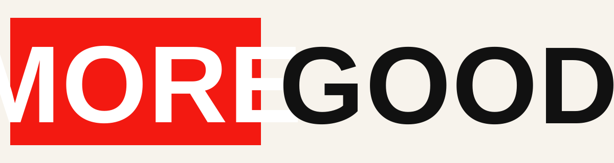
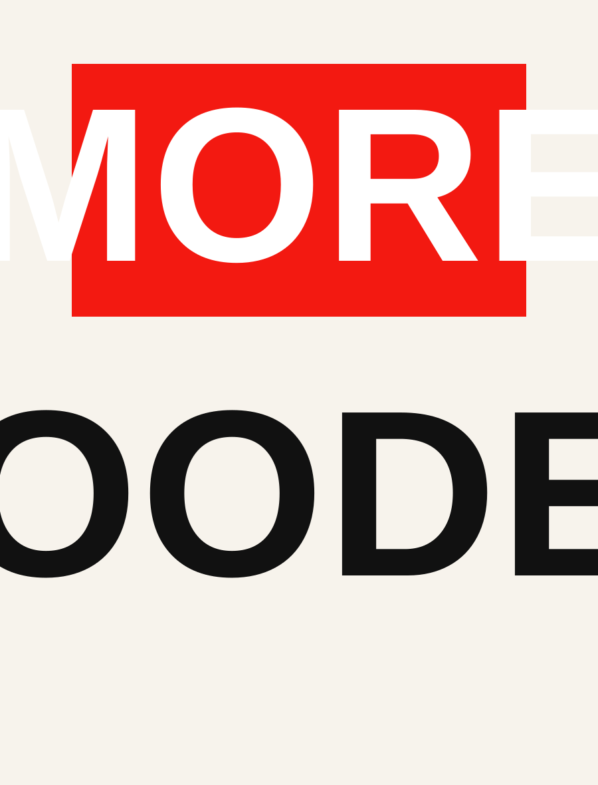

01
Conversations with pace
Built for hosts who know how to keep things moving, with enough room for surprise and depth.

Podcast
"More Gooder" is a clean, culture-forward show for listeners who want wit, perspective, and a little edge without the noise.

Smart talk. Dry humor. Strong opinions. A cleaner kind of chaos.
Why It Works
The show feels graphic, conversational, and confident. The page mirrors that with oversized type, editorial spacing, and a single red signal color that keeps the brand instantly recognizable.
01
Built for hosts who know how to keep things moving, with enough room for surprise and depth.
02
Clean structure, high contrast, and just enough motion to feel modern without looking generic.
03
Use this landing page as the foundation for episode drops, newsletter signups, and social-linked traffic.
Latest On YouTube
Catch the full show, highlights, and fresh uploads directly from our YouTube channel.
Visit YouTube ChannelLoading recent videos...
Listen Anywhere
Plug in your Spotify, Apple Podcasts, YouTube, or newsletter links and this becomes a clean conversion surface for the show.